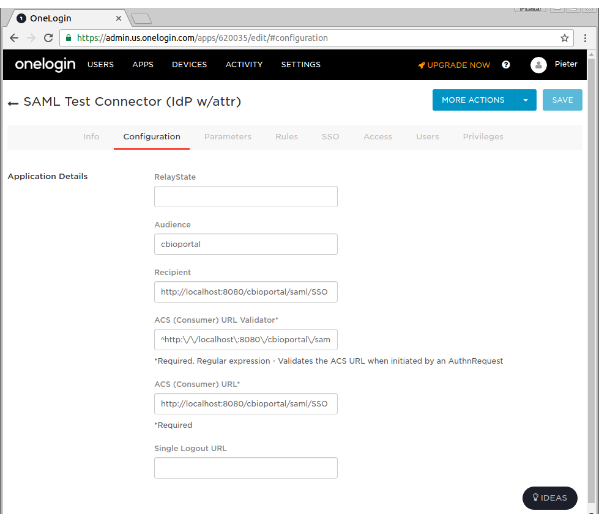
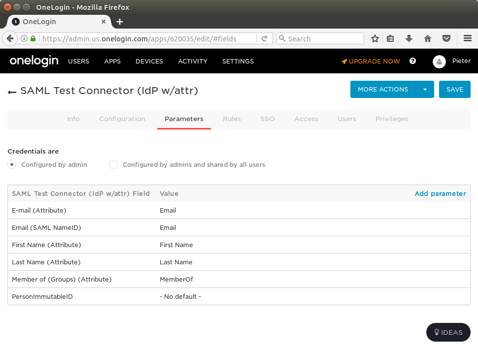
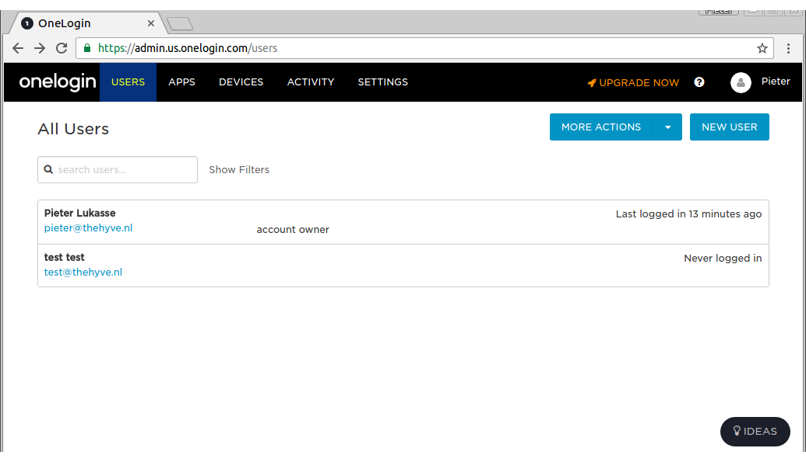
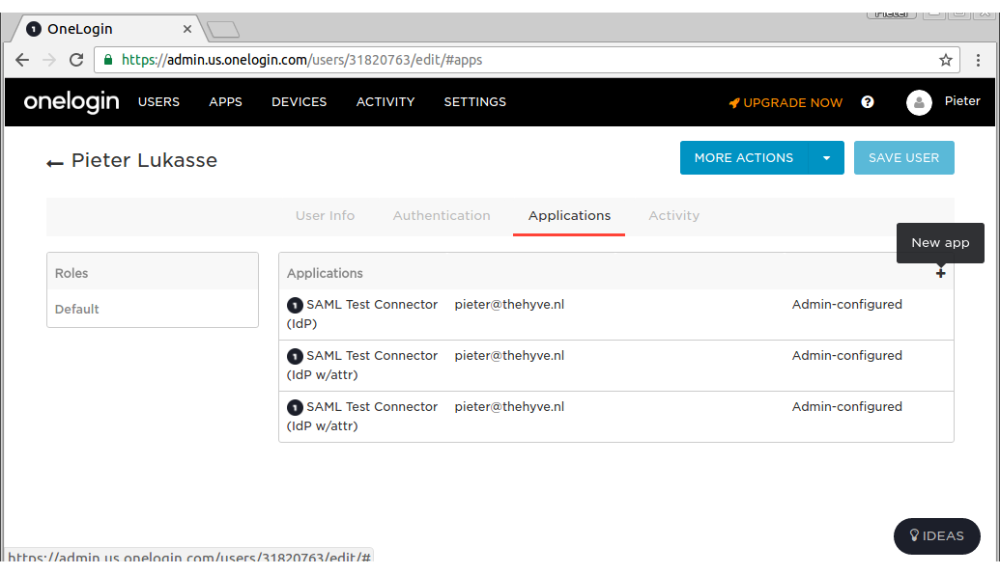
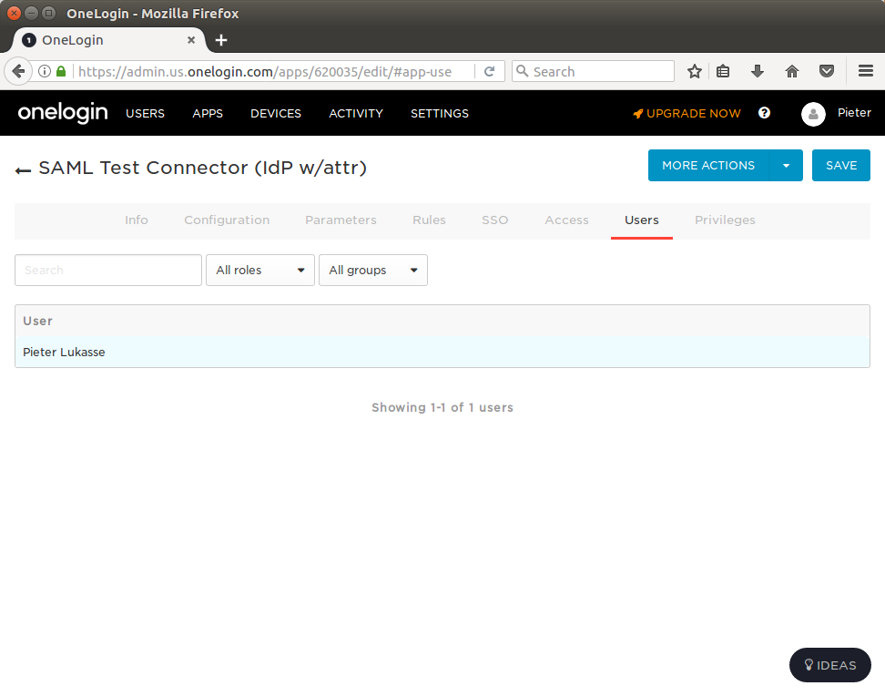

Introduction
The cBioPortal includes support for SAML (Security Assertion Markup Language). This document explains why you might find SAML useful, and how to configure SAML within your own instance of cBioPortal.
Please note that configuring your local instance to support SAML requires many steps. This includes configuration changes and a small amount of debugging. If you follow the steps below, you should be up and running relatively quickly, but be forewarned that you may have do a few trial runs to get everything working.
In the documentation below, we also provide details on how to perform SAML authentication via a commercial company: OneLogin. OneLogin provides a free tier for testing out SAML authentication, and is one of the easier options to get a complete SAML workflow set-up. Once you have OneLogin working, you should then have enough information to transition to your final authentication service.
What is SAML?
SAML is an open standard that enables one to more easily add an authentication service on top of any existing web application. For the full definition, see the SAML Wikipedia entry.
In its simplest terms, SAML boils down to four terms:
-
identity provider: this is a web-based service that stores user names and passwords, and provides a login form for users to authenticate. Ideally, it also provides easy methods to add / edit / delete users, and also provides methods for users to reset their password. In the documentation below, OneLogin.com serves as the identity provider.
-
service provider: any web site or web application that provides a service, but should only be available to authenticated and authorized users. In the documentation below, the cBioPortal is the service provider.
-
authentication: a means of verifying that a user is who they purport to be. Authentication is performed by the identify provider, by extracting the user name and password provided in a login form, and matching this with information stored in a database. When authentication is enabled, multiple cancer studies can be stored within a single instance of cBioPortal while providing fine-grained control over which users can access which studies. Authorization is implemented within the core cBioPortal code, and not the identify provider.
Why is SAML Relevant to cBioPortal?
The cBioPortal code has no means of storing user name and passwords and no means of directly authenticating users. If you want to restrict access to your instance of cBioPortal, you therefore have to consider an external authentication service. SAML is one means of doing so, and your larger institution may already provide SAML support. For example, at Sloan Kettering and Dana-Farber, users of the internal cBioPortal instances login with their regular credentials via SAML. This greatly simplifies user management.
Setting up an Identity Provider
As noted above, we provide details on how to perform SAML authentication via a commercial company: OneLogin.
If you already have an IDP set up, you can skip this part and go to
OneLogin provides a free tier for testing out SAML authentication, and is one of the easier options to get a complete SAML workflow set-up. Once you have OneLogin working, you should then have enough information to transition to your final authentication service. As you follow the steps below, the following link may be helpful: How to Use the OneLogin SAML Test Connector.
To get started:
Setting up a SAML Test Connector
- Login to OneLogin.com.
- Under Apps, Select Add Apps.
- Search for SAML.
- Select the option labeled: OneLogin SAML Test (IdP w/attr).
- "SAVE" the app, then select the Configuration Tab.
-
Under the Configuration Tab for OneLogin SAML Test (IdP w/attr), paste the following fields (this is assuming you are testing everything via localhost).
- Audience: cbioportal
- Recipient: http://localhost:8080/saml/SSO
- ACS (Consumer) URL Validator*: ^http://localhost:8080/cbioportal/saml/SSO$
- ACS (Consumer) URL*: http://localhost:8080/saml/SSO

- Add at least the parameters:
- Email (Attribute)
- Email (SAML NameID)

- Find your user in the "Users" menu

- Link the SAML app to your user (click "New app" on the + icon found on the top right of the "Applications" table to do this - see screenshot below):

- Configure these email parameters in the Users menu:

Downloading the SAML Test Connector Meta Data
- Go to the SSO Tab within OneLogin SAML Test (IdP), find the field labeled: Issuer URL. Copy this URL and download it's contents. This is an XML file that describes the identity provider.

then, move this XML file to:
portal/src/main/resources/You should now be all set with OneLogin.com. Next, you need to configure your instance of cBioPortal.
Configuring SAML within cBioPortal
Creating a KeyStore
In order to use SAML, you must create a Java Keystore.
This can be done via the Java keytool command, which is bundled with Java.
Type the following:
keytool -genkey -alias secure-key -keyalg RSA -keystore samlKeystore.jksThis will create a Java keystore for a key called: secure-key and place the keystore in a file named samlKeystore.jks. You will be prompted for:
- keystore password (required, for example: apollo1)
- your name, organization and location (optional)
- key password for
secure-key(required, for example apollo2)
When you are done, copy samlKeystore.jsk to the correct location:
mv samlKeystore.jks portal/src/main/resources/If you need to export the public certificate associated within your keystore, run:
keytool -export -keystore samlKeystore.jks -alias secure-key -file cBioPortal.cerHTTPS and Tomcat
⚠️ If you already have an official (non-self-signed) SSL certificate, and need to get your site running on HTTPS directly from Tomcat, then you need to import your certificate into the keystore instead. See this Tomcat documentation page for more details.
⚠️ An extra warning for when configuring HTTPS for Tomcat: use the same password for both keystore and secure-key.
Modifying configuration
Within application.properties, make sure that:
app.name=cbioportalThen, modify the section labeled authentication. See SAML parameters shown in example below:
saml.sp.metadata.entityid=cbioportal
saml.sp.metadata.wantassertionsigned=true
saml.idp.metadata.location=classpath:/onelogin_metadata_620035.xml
saml.idp.metadata.entityid=https://app.onelogin.com/saml/metadata/620035
saml.keystore.location=classpath:/samlKeystore.jks
saml.keystore.password=apollo1
saml.keystore.private-key.key=secure-key
saml.keystore.private-key.password=apollo2
saml.keystore.default-key=secure-key
saml.idp.comm.binding.settings=defaultBinding
saml.idp.comm.binding.type=
saml.idp.metadata.attribute.email=User.email
saml.idp.metadata.attribute.userName=User.name
saml.custom.userservice.class=org.cbioportal.security.spring.authentication.saml.SAMLUserDetailsServiceImpl
# global logout (as opposed to local logout):
saml.logout.local=false
saml.logout.url=/Please note that you will have to modify all the above to match your own settings. saml.idp.comm.binding.type can be left empty if saml.idp.comm.binding.settings=defaultBinding. The saml.logout.* settings above reflect the settings of an IDP that supports Single Logout (hopefully the default in most cases - more details in section below).
In the case that you are running cBioPortal behind a reverse proxy that handles the SSL certificates (such as nginx or traefik), you will have to also specify saml.sp.metadata.entitybaseurl. This should point to https://host.example.come:443. This setting is required such that cBioPortal uses the Spring SAML library appropriately for creating redirects back into cBioPortal.
In addition there is a known bug where redirect from the cBioPortal instance always goes over http instead of https (https://github.com/cBioPortal/cbioportal/issues/6342). To get around this issue you can pass the full URL including https to the webapp-runnner.jar command with e.g. --proxy-base-url https://mycbioportalinstance.org.
Custom scenarios
ℹ️ Some settings may need to be adjusted to non-default values, depending on your IDP. For example, if your IDP required HTTP-GET requests instead of HTTP-POST, you need to set these properties as such:
saml.idp.comm.binding.settings=specificBinding
saml.idp.comm.binding.type=bindings:HTTP-RedirectIf you need a very different parsing of the SAML tokens than what is done at org.cbioportal.security.spring.authentication.saml.SAMLUserDetailsServiceImpl, you can point the saml.custom.userservice.class to your own implementation:
saml.custom.userservice.class=<your_package.your_class_name>⚠️ The properties saml.idp.metadata.attribute.email, and saml.idp.metadata.attribute.userName can also vary per IDP. It is important to set these correctly since these are a required field by the cBioPortal SAML parser (that is, if org.cbioportal.security.spring.authentication.saml.SAMLUserDetailsServiceImpl is chosen for property saml.custom.userservice.class).
⚠️ Some IDPs like to provide their own logout page (e.g. when they don't support the custom SAML Single Logout protocol). For this you can adjust the
saml.logout.url property to a custom URL provided by the IDP. Also set the saml.logout.local=true property in this case to indicate that global logout (or Single Logout) is not supported by IDP:
# local logout followed by a redirect to a global logout page:
saml.logout.local=true
saml.logout.url=<idp specific logout URL, e.g. https://idp.logoutpage.com >⚠️ Some IDPs (e.g. Azure Active Directory) cache user data for more than 2 hours causing cbioportal to complain that the authentication statement is too old to be used. You can fix this problem by setting forceAuthN to true. Below is an example how you can do this with the properties. You can choose any binding type you like. bindings:HTTP-Redirect is given just as an example.
saml.idp.comm.binding.settings=specificBinding
saml.idp.comm.binding.type=bindings:HTTP-Redirect
saml.idp.comm.binding.force-auth-n=trueMore customizations
If your IDP does not have the flexibility of sending the specific credential fields expected by our
default "user details parsers" implementation (i.e. security/security-spring/src/main/java/org/cbioportal/security/spring/authentication/saml/SAMLUserDetailsServiceImpl.java
expects field mail to be present in the SAML credential), then please let us know via a new
issue at our issue tracking system, so we can
evaluate whether this is a scenario we would like to support in the default code. You can also consider
adding your own version of the SAMLUserDetailsService class.
Authorizing Users
Next, please read the Wiki page on User Authorization, and add user rights for a single user.
Configuring the Login.html Page (not applicable to most external IDPs)
The login page is configurable via the application.properties properties skin.authorization_message and skin.login.saml.registration_htm.
For example in skin.authorization_message you can be set to something like this:
skin.authorization_message= Welcome to this portal. Access to this portal is available to authorized test users at YOUR ORG. [<a href="https://thehyve.nl/">Request Access</a>].and skin.login.saml.registration_htm can be set to:
skin.login.saml.registration_htm=Sign in via XXXXYou can also set a standard text in skin.login.contact_html that will appear in case of problems:
skin.login.contact_html=If you think you have received this message in error, please contact us at <a style="color:#FF0000" href="mailto:cbioportal-access@your.org">cbioportal-access@your.org</a>Doing a Test Run
You are now ready to go.
Rebuild the WAR file and follow the Deployment with authentication
steps using authenticate=saml.
Then, go to: http://localhost:8080/.
If all goes well, the following should happen:
- You will be redirected to the OneLogin Login Page.
- After authenticating, you will be redirected back to your local instance of cBioPortal.
If this does not happen, see the Troubleshooting Tips below.
Troubleshooting Tips
Logging
Getting this to work requires many steps, and can be a bit tricky. If you get stuck or get an obscure error message,
your best bet is to turn on all DEBUG logging. This can be done via src/main/resources/logback.xml. For example:
<root level="debug">
<appender-ref ref="STDOUT" />
<appender-ref ref="FILE" />
</root>
<logger name="org.mskcc" level="debug">
<appender-ref ref="STDOUT" />
<appender-ref ref="FILE" />
</logger>
<logger name="org.cbioportal.security" level="debug">
<appender-ref ref="STDOUT" />
<appender-ref ref="FILE" />
</logger>Then, rebuild the WAR, redeploy, and try to authenticate again. Your log file will then include hundreds of SAML-specific messages, even the full XML of each SAML message, and this should help you debug the error.
Seeing the SAML messages
Another tool we can use to troubleshoot is SAML tracer (https://addons.mozilla.org/en-US/firefox/addon/saml-tracer/ ). You can add this to Firefox and it will give you an extra menu item in "Tools". Go through the loging steps and you will see the SAML messages that are sent by the IDP.
Obtaining the Service Provider Meta Data File
By default, the portal will automatically generate a Service Provider (SP) Meta Data File. You may need to provide this file to your Identity Provider (IP).
You can access the Service Provider Meta Data File via a URL such as:
http://localhost:8080/saml/metadata